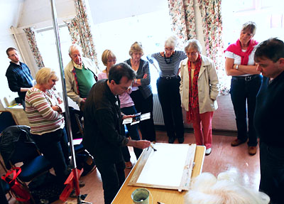

September-April
Members meet every Wednesday in Ferring Village Hall, 9:30-11:30 A.M.
When do we meet? Click here to skip down to our programme schedule
Where is the hall? - Click here to see the address and map (further down the page)
May-August
Members meet in different locations every week to sketch and paint outside.
Art demonstration meetings are held on the third Saturday of every month,
and visitors are welcome at these.
(Image used with permission of Jake Winkle)
Arun Art Society Monthly Meetings 2016/17
These special meetings occur every third Saturday each month
at Ferring Village Hall at 2.30-4:30 p.m. except **
Visitors warmly welcomed - £4 per meeting
| 2016 | 2016 cont'd | ||
|---|---|---|---|
| Apr 16th | AGM | Sep 17th | Fatima Pantoja Creating interesting portraits |
| May 21st | Christine Hopkins An urban landscape in mixed media |
Oct 15th | Maggie Read A garden scene in watercolour and pastel |
| June 18th | Hashim Akib Portrait in acrylics |
Nov 19th | Kate Osborne Animals in watercolour |
| July 16th | Carole Aston Painting with pen and wash |
||
| 2017 | |||
| Jan 21st | Dave White Sea and sky in acrylics |
||
| Feb 18th | Adie Parker An interior scene |
||
| Mar 18th | Karin Moorhouse Portrait of a child - at St. Andrew's Church Hall |

(Image used with permission of Jake Winkle)
Location of Ferring Village Hall
Address:
Ferring Street,
Ferring,
West Sussex,
BN12 5JP
Map:
Click here to see this on Google Maps!